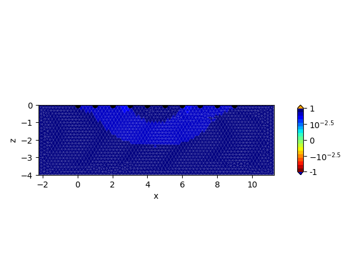

Note
Click here to download the full example code
Plotting sensitivities¶
Sensitivity distributions can be easily plotted using the tdMan class:
imports
import numpy as np
import crtomo
create and save a FEM-grid
grid = crtomo.crt_grid.create_surface_grid(
nr_electrodes=10, spacing=1,
depth=4,
char_lengths=0.2,
)
grid.plot_grid()
grid.save_elem_file('elem.dat')
grid.save_elec_file('elec.dat')
Out:
This grid was sorted using CutMcK. The nodes were resorted!
Triangular grid found
create the measurement configuration
configs = np.array((
(1, 4, 10, 7),
))
for different background, plot the sensitivities
for bg in (1, 10, 100, 1000):
td = crtomo.tdMan(grid=grid)
td.configs.add_to_configs(configs)
td.add_homogeneous_model(bg, 0)
td.model(sensitivities=True)
r = td.plot_sensitivity(0)
r[0].savefig('sensitivity_bg_{}.pdf'.format(bg), bbox_inches='tight')
r = td.plot_sensitivity(0, mag_only=True)
r[0].savefig(
'sensitivity_magonly_bg_{}.pdf'.format(bg), bbox_inches='tight')
- 


Out:
attempting modeling
reading voltages
reading sensitivities
attempting modeling
reading voltages
reading sensitivities
attempting modeling
reading voltages
reading sensitivities
attempting modeling
reading voltages
reading sensitivities
Total running time of the script: ( 0 minutes 26.103 seconds)